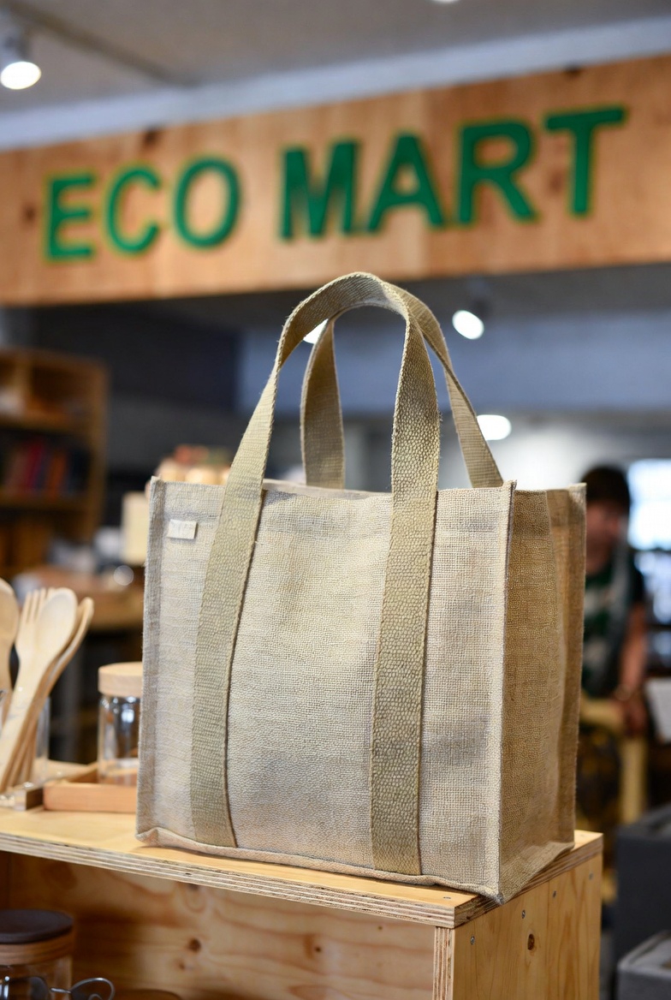
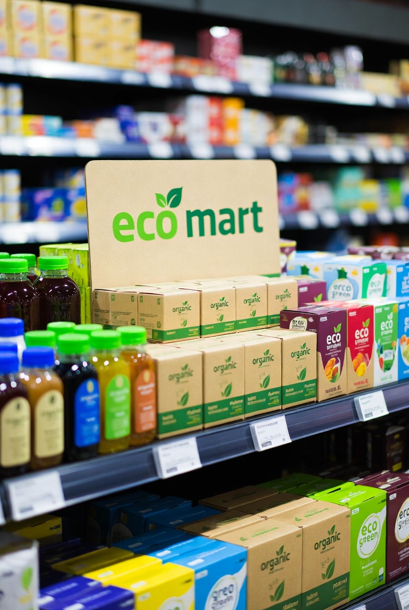
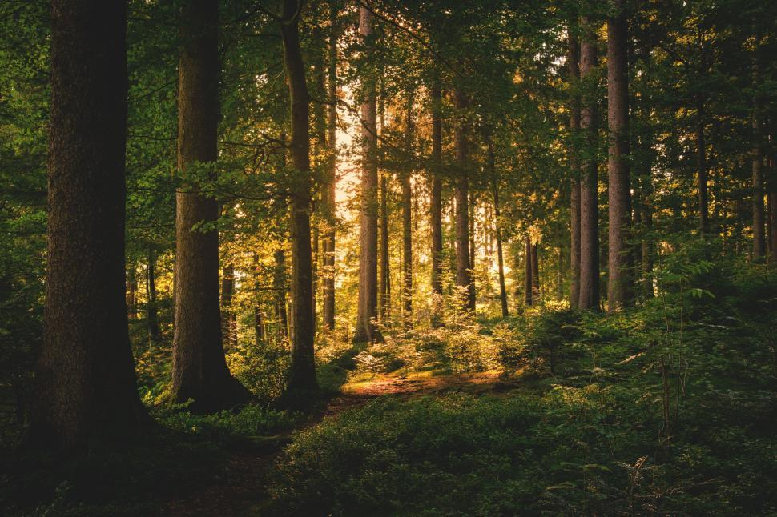
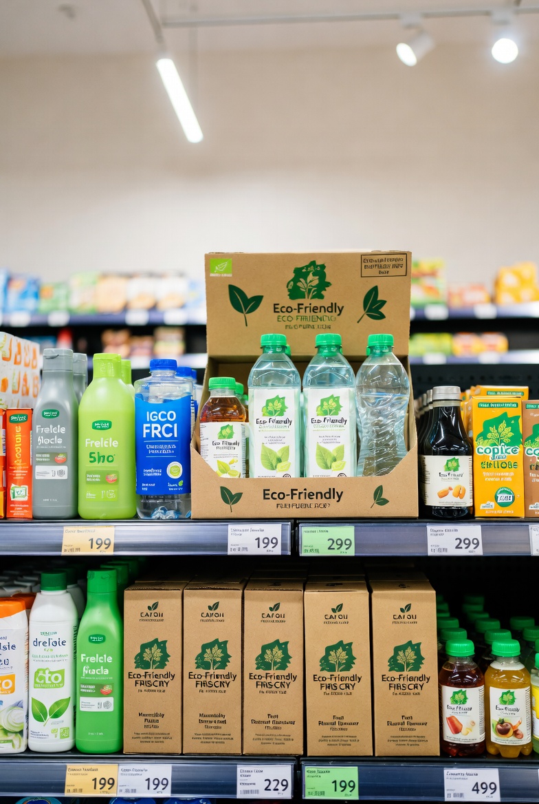

Discover sustainable living tips, green technology trends, and eco-friendly inspiration
Discover the best deals on top-quality products across all categories. Shop with confidence and enjoy unbeatable prices, fast delivery, and a seamless shopping experience.
Technology has become an integral part of the 21st century. It plays a vital role in shaping the sustainable future. Modern technology has enabled businesses like EcoMart smart manufacturing practices to digital market places to reduce waste, improve efficiency, and promote environmentally responsible consumption.
What we are experiencing right now is a “Green Tech Supercycle”. Technology is no longer just about devices but is actually about the tools that we use in healing the earth.
of 2026, wind and solar power are finallyoutpacing nuclear power worldwide. Advances in “solar glass” windows and “floating wind farms” are causing cities to become power producers.
Artificial Intelligence is now a major tool in real-time environmental monitoring. AI-powered tools can forecast wildfires, monitor endangered species using drones, and manage irrigation in “precision agriculture” to conserve billions of gallons of water.
New technologies such as bioleaching (the use of bacterial leaching to extract metallic elements) and AI-driven robotic sorting are making electronics recycling easier than ever before.
The rise in Generative AI has led to a massive energy thirst. “One ChatGPT query can consume 10 times as much energy as a typical Google search.” Data centers are estimated to consume more energy than Germany and France combined by 2030.
High-performance chips demand massive amounts of cooling. The estimated consumption of a mere 20-question dialogue with an AI model is said to "drink" as much as half a liter of fresh water.
Every email that is stored on servers, every video that is streamed, creates a global carbon footprint. Even “the cloud” is housed in a physical structure that, as of 2026, derives 40% of its new energy sources from fossil fuels.

With the motto "Lets go zero waste Nepal.", Eco Sathi has proven itself to be a purpose-driven sustainable brand rooted in the idea that environmental responsibility begins at the community level. As EcoMart, we are continuously in search of the “movers and shakers” who don’t only talk but actually live the talk of sustainability. We were recently able to meet up with the dynamic individual behind “Eco Sathi Nepal,” none other than Dr. Manu Karki. A dentist by vocation and an ecopreneur at heart, Manu’s story begins with a simple yet sarcastic purchase of a bamboo toothbrush that came packaged in layers of plastic bubble sheeting. Manu’s ecostory was conceived in this moment of brilliant insight and innovation.
EcoMart: What is the biggest challenge in the “Green Business” space today?
Dr. Manu Karki: "Price and perception. Consumers believe eco-friendly = expensive. Our job is to show consumers that, although our prices may be a tad steeper, our return on investment regarding your physical and environmental well-being simply can’t be estimated. We take special care to ensure our prices remain affordable."
EcoMart: One thing you always say is “Start small.” What small change can we all make today?
Dr. Manu Karki: "Just observe your morning routine. Using a bamboo toothbrush or a safety razor means getting rid of plastic that will last for your lifetime. It is the simplest win you can achieve before 8:00 AM."
One thing that inspires us the most about them is that it is not all about green products. They donate 15% of their monthly earnings to Aama Surakshya Nepal, which is a non-profit organization for pregnant mothers. It's a great reminder that social equity and green living go hand-in-hand.

Technology is an important factor in the quick adoption of sustainable products. Online platforms like e-commerce sites, mobile apps, and social media sites help sustainable product brands reach a larger audience with less harm to the environment. Data analysis and artificial intelligence-based trend tracking help organizations understand consumer behavior and recommend sustainable products to consumers effectively. Other technologies like blockchain and QR codes also help sustainable products by enabling consumers to track the origin and production process of products. Digital product reviews and sustainable product labels also help consumers feel comfortable about selecting sustainable products. Effective logistics and sustainable delivery systems also reduce waste and carbon footprint of products and make sustainability a profitable business opportunity.
Products are designed in such a way that they cause little or no harm to the environment while, at the same time, contributing positively to the well-being of the current and future generations of the earth. For example, the use of environmentally friendly products helps to decrease pollution in the earth's environment and preserve natural resources in the earth at the same time. In fact, environmentally friendly products contain high-quality ingredients that are not hazardous to the well-being of the earth in the long term.

A few months back, Yunesh (our Creative Director) visited a family-owned workshop in the hills surrounding Kathmandu. There was a smell of processing hemp fibers in the air, and we were able to witness the artisans weaving their magic to create what would soon become one of our most popular bestselling backpacks. Experiences like those serve as a gentle nudge to remember what drove us to start EcoMart in the first place. These bags aren’t produced by machine in factories. They are made from Himalayan wild hemp, a plant that grows on its own and needs neither pesticides nor water, thereby making it the most sustainable material on earth. They are also tougher than cotton, resist semua bacteria on their own, and are biodegradable. Raghav, the man handling our operations, is the reason for following each step in a manner consistent with our commitment to pay a fair price to the crafters, keep plastic usage to a minimum in packing, and also keep shipping carbon-neutral right up to your doorstep. As you carry one of them along, you’re not carrying style; you’re carrying a part of Nepal and a commitment to a healthier earth.
— Team EcoMart 🌿

As someone living in Kathmandu, we experience the best and worst on a daily basis: gorgeous mountain ranges in the backdrop, but far too much plastic trash lining the roads. This has made the entire EcoMart team so passionate about sustainables because, trust us, it should never feel like a hassle. Here are five simple changes that have made significant impacts for us: Replace plastic bags with reusables (such as our sari bags, which can stop the disposal of dozens of plastics). Use bamboo straw and cutlery kits for momos or tea times. Pick natural fibers like hemp or allo to replace microplasing synthetic fibers.
Whenever possible, choose the local option over the imported one. This helps reduce transport emissions, ensures the food is fresh, and builds a better community. We keep it simple. We believe that every thoughtful decision, no matter how small, counts. Yunesh always tells us that the goal of design should be to encourage positive change, not induce guilt. We, therefore, keep the design of eco-friendly options simple, elegant, and functional. Raghav keeps the engine running, and we keep learning every day. Tell us, what one sustainable change have you adopted recently? Share it with us.
— Team EcoMart 💚Explore how innovative technologies are making eco-friendly living more accessible.
From smart homes to AI-powered sustainability tools.

One of the most common questions we receive is: “Does buying really mean a tree gets planted?” Yes — and we want to explain exactly how. With every purchase, we work with local forestry initiatives in rural areas such as Sindhupalchok and Dolakha. These aren’t some abstract corporate sustainability initiatives; these projects are real and led either by local communities, with a focus on women's groups, who understand the area best. Raghav manages the process: figuring out an average level of emissions related to every order, then channelling money toward local purchases and plantations of local trees such as Sal, Uttis, and Pine. So far in the year, thanks to your orders, more than 400 trees have been planted — and we’re only just getting started. Yunesh created a thank-you note card included inside every single box with a picture from a tree-planting site so you can see with your own eyes what good your order does. We’re a small operation learning as we go, but we mean what we say: thank you for putting your faith in us to coax your order into a tree.
— Team EcoMart 🌱

People often ask us what made our community of university students get involved in running an eco-friendly online store in Nepal. Honestly? It’s because of conversations we had late into the night about the issues we saw in our own world – plastic clogging our Kathmandu streets, artisans not having access to marketplaces for their craft, our own climate crisis worsening every single year. Raunak, our founder, is an AI studies guy with the bigger dream of making a change in the world through technology. He’s the one with the initiative and the ideas that turned a mere thought into EcoMart. Yunesh, our Creative Director, joined in with his unbelievable design skills. He’s always the one behind ensuring everything is laid back yet aesthetically pleasing – right from our site layouts down to our product shots that hopefully now (and for the first time!) convey the beauty of Nepali artisans in our products. Of course, we have Raghav, our Operations Head, always making sure that our operation hums along perfectly. From our artisans’ communications down to our on-time deliveries that come in zero-waste packaging, he’s on top of everything. The thing is, we’re not some people who've worked for decades in our line of business. Instead, we could be summed up as three twenty-something friends with the hope that we in Nepal could change our world for the better. We're always learning, sometimes making mistakes, correcting them along the way, yet still pushing for what we're after because we also know that our small decisions matter. EcoMart is not about flawlessness. It’s about improvement – not harming artisans, not harming the Earth in general, planting trees because we love our home in the mountains of Nepal (and there’s still hope for our future there), as well as figuring out a way for business to be good. Appreciate that we’re on this path. You're not just our supporters – you're part of our story too.
— Raunak, Yunesh, Raghav, Prinsha, Rikma & the EcoMart Team 🌿

As we inch closer to the end of 2025, the EcoMart family just keeps getting bigger – and we're having the time of our lives sharing it all with you! What was once a dream shared between a few friends has now turned into a collaborative project, and we're so happy to introduce two new key players leading the charge. First, there's Prinsha, our Head of Sustainability, with an undying passion for the beautiful landscapes of Nepal and an intellect rivaled only by her creativity. She's also the brain behind ensuring all products sold through the platform adhere strictly to the best practices of sustainability. This would include hemp bags sold through our stores and bamboo cutlery. She's responsible for rallying local communities to source sustainable materials while also initiating and monitoring tree-planting initiatives so every order placed not only brings a positive impact but also restores the countryside, such as Sindhupalchok. Next, there's Rikma, our Chief Officer, always leading with her sights set on the larger picture. With her on board, we're not only reshaping goals but also fostering new partnerships with artists while ensuring EcoMart never loses touch with where it all started while going further to serve all the conscious shoppers across the world. She's the yin to Raunak's founder spirit, Yunesh's creativity, and Raghav's doing magic.
Together, we make an interesting team: Raunak working on technology solutions, Yunesh working his magic on the graphics, Raghav handling the execution, Prinsha taking care of our environment promise, and Rikma guiding us to make an impactful difference together. As we sit here in this cold winter Monday morning of the 29th of December in the year 2025 at 11:46 AM, we can’t help but think about how we’ve achieved so much and how we can do so much more in the future.
EcoMart is more than an outlet; it’s a revolution created by young individuals of Nepal who actually care about the future of the environment. Thank you for being along with us on this journey that we have undertaken so far. What drives you to purchase sustainable products? Tell us below!
— The EcoMart Team 🌿